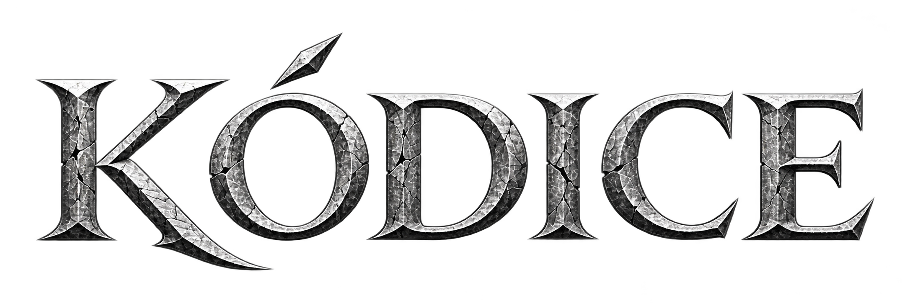

Nenhum documento carregado
O leitor exibe apenas texto retornado pelo backend jurídico.
GET /api/legal/norms/:id/units
Nenhum documento é exibido antes de confirmação da API.
GET /api/legal/catalogAs normas disponíveis vêm do backend jurídico.
GET /api/legal/catalogA consulta é enviada integralmente ao resolvedor jurídico do backend. Catálogo e aliases conhecem as normas; o frontend apenas apresenta a resposta. Sem IA e sem interpretação probabilística.
Resultados aparecem somente quando retornados pelo backend.
GET /api/legal/searchO leitor exibe apenas texto retornado pelo backend jurídico.
GET /api/legal/norms/:id/units